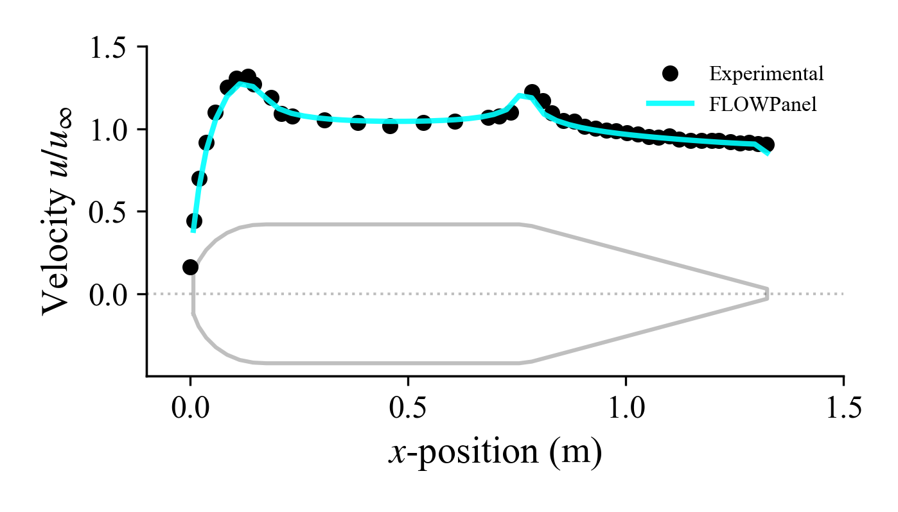

Vortex Ring Elements
While source elements are physically adequate to model a non-lifting body, in some circumstances it may be benefitial to use all vortex ring elements. A thick body with only vortex ring elements leads to a surface velocity that is inaccurate at the exact surface of the body, but that approximates the physical solution away from the surface. For this reason, we probe the velocity used to calculate Cp slightly away from the body.
Here we repeat the example using only vortex ring elements.
bodytype = pnl.RigidWakeBody{pnl.VortexRing} # Elements and wake model
body = pnl.generate_revolution_liftbody(bodytype, points, NDIVS_theta;
# Loop the azimuthal dimension to close the surface
loop_dim=2,
# Rotate the axis of rotation to align with x-axis
axis_angle=90,
# Indicate that this body is open at the trailing edge
closed_contour=false)
# ----------------- CALL SOLVER ------------------------------------------------
println("Solving body...")
# Freestream at every control point
Uinfs = repeat(Vinf, 1, body.ncells)
# Unitary direction of semi-infinite vortex at points `a` and `b` of each
# trailing edge panel
# NOTE: In this case they are empty arrays since there is no wake
Das = repeat(Vinf/magVinf, 1, body.nsheddings)
Dbs = repeat(Vinf/magVinf, 1, body.nsheddings)
# Solve body (panel strengths) giving `Uinfs` as boundary conditions and
# `Das` and `Dbs` as trailing edge rigid wake direction
@time pnl.solve(body, Uinfs, Das, Dbs)
# ----------------- POST PROCESSING --------------------------------------------
println("Post processing...")
# NOTE: A thick body with only vortex ring elements leads to a surface velocity
# that is inaccurate at the exact surface of the body, but that
# approximates the physical solution away from the surface. For this
# reason, we probe the velocity used to calculate Cp slightly away from
# the body
# Calculate surface velocity on the body
Us = pnl.calcfield_U(body, body)
# NOTE: Since the boundary integral equation of the potential flow has a
# discontinuity at the boundary, we need to add the gradient of the
# doublet strength to get an accurate surface velocity
# Calculate surface velocity U_∇μ due to the gradient of the doublet strength
UDeltaGamma = pnl.calcfield_Ugradmu(body)
# Add both velocities together
pnl.addfields(body, "Ugradmu", "U")
# Calculate pressure coefficient
Cps = pnl.calcfield_Cp(body, magVinf)
# Calculate the force of each panel
Fs = pnl.calcfield_F(body, magVinf, rho)
Surface velocity
